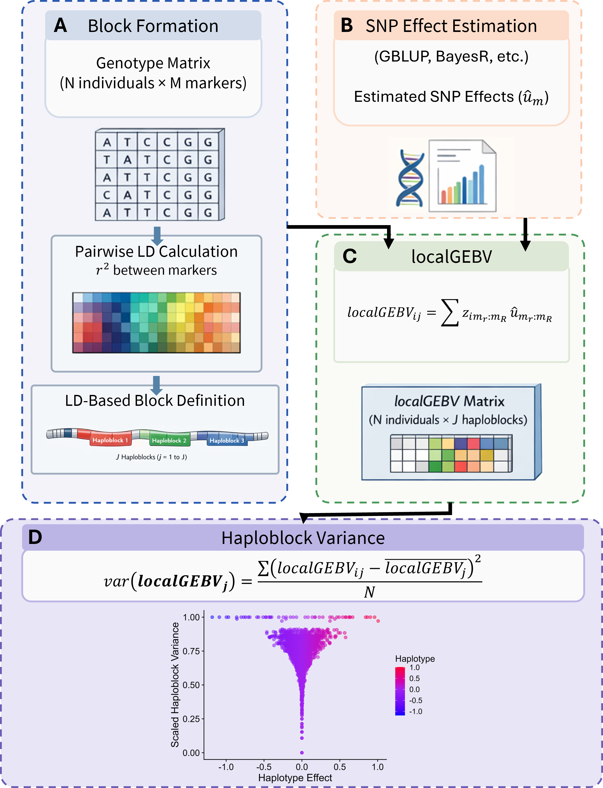

Process Overview¶
HapSelect implements a six-stage pipeline that moves from raw genotype data to an optimised set of founder parents for a genomic selection program.

A — LD Computation and Block Formation¶
The first stage partitions the genome into haplotype blocks using linkage disequilibrium (LD) between markers. We highly recommend using PLINK 1.9 to compute pairwise LD. If PLINK 1.9 is installed and available in the PATH variable, we offer a wrapper function to compute LD and format the output appropriately with the plink_pairwise_ld_geno() function. See Pairwise LD for more information.
Starting from a pared-down VCF structured genotype matrix of N individuals × M markers (see Pairwise LD for more details), HapSelect:
- Computes pairwise r² between all marker pairs within each chromosome
- Uses the r² matrix to define contiguous regions of high internal LD — haploblocks
The result is a set of J haploblocks that tile the genome, each capturing a segment of co-inherited variation. Haploblock IDs follow the convention of Chromosome:Block, identifying blocks nested within chromosome.
A custom haploblock dataframe can be provided, but it must follow the output structure produced from block_obj_to_df().
#compute pairwise LD
ld_pairs <- plink_pairwise_ld_geno(geno = geno, ld_window = 999999,
ld_window_kb = 1e6, ld_window_r2 = 0)
#make a haploblock list object
haploblocks <- def_blocks(ld = ld_pairs, map = map, method = "flanking",
threshold = 0.2, tolerance = 4)
#turn the list object into a singular data frame
haploblocks <- block_obj_to_df(haploblocks, map)
Tip
There are many parameters that affect the behaviour of def_blocks() with various defaults. Be sure to check out all options and how they can influence the result. See Haplotype Blocks for more details!
B — SNP Effect Estimation¶
Marker effects are estimated independently using a genomic prediction model — GBLUP with backsolve, BayesR, rrBLUP, other Bayesian methods, or any equivalent method that produces per-SNP effect estimates (\(\hat{u}_m\)).
HapSelect offers a basic genomic prediction model by integrating the rrBLUP R Package. However, the implementation is limited to utilising singular BLUE, adjusted phenotype, or deregressed BLUP for each individual and no other effects may be included in the model. For any users needing to employ more advanced modelling, please consult the packages below.
Any model that returns a vector of marker effect estimates aligned to the same map can be used and it is up to the user to ensure marker effect estimates are correctly generated. Please see localGEBV for file structure details.
Example R Packages for Genomic Prediction:¶
SNP Based Models:
rrBLUP
BGLR
Sommer
ASREML-R
GBLUP Based Models:
rrBLUP
Sommer
ASREML-R
# Example using rrBLUP integration into package
marker_effects <- create_marker_effects_file(geno = geno, BLUE = BLUE, h2_method = "VanRaden", ploidy = 2L)
C — Local GEBV¶
With haploblocks defined and marker effects estimated, HapSelect calculates a local genomic estimated breeding value (localGEBV) for each individual in each haploblock:
where \(\overline{z_{im}}\) is the centered (see Van Raden, 2008) allele dosage of individual \(i\) at marker \(m\) in haploblock \(j\), and \(\hat{u}_m\) is the estimated marker effect.
This produces an \(\text{N × J}\) matrix of localGEBV values — one value per individual per haploblock for \(J\) haploblocks — which captures the breeding value contribution of each genomic region separately.
haploblock_obj <- compute_local_GEBV(
geno = geno,
marker_effects = marker_effects,
haploblocks_df = haploblocks,
mean_adjust = TRUE
)
D — Haploblock Variance¶
Not all haploblocks are equally informative. HapSelect ranks blocks by the variance of localGEBV across individuals:
where \(\text{var}(\mathbf{\text{localGEBV}_j})\) is the haploblock variance.
High-variance blocks are those where individuals differ substantially in their haplotype (localGEBV) effects — these are the genomic regions where parent choice will have the greatest impact on offspring breeding value.
The funnel plot (block_var_funnel_plot) visualises this across all blocks, with localGEBV effects on the x-axis and block variance on the y-axis scaled using a 0 to 1 min-max scaling procedure. Similarly, localGEBV effects can be visualised in a Manhattan-style plot using the unique_haplo_effects_plot() function (for more details and information, see Visualisations).
E — Parent Selection¶
The top-ranked haploblocks (by variance) are used as targets for the genetic algorithm. genetic_algorithm() searches for a set of n_founders parents that collectively carry the highest-value haplotype alleles across the selected blocks, subject to constraints on crossing scheme and population size.
#1: select top 15 haploblocks (arbitrary)
haploblock_obj <- select_top_blocks(haploblock_obj = haploblock_obj, n = 15)
#2 select top 50% of haploblocks (arbitrary)
haploblock_obj <- select_top_blocks(haploblock_obj = haploblock_obj, perc_total = 0.5)
#3 select the top blocks explaining at least 90% of the total block variance (arbitrary)
haploblock_obj <- select_top_blocks(haploblock_obj = haploblock_obj, perc_of_total_var = 0.9)
GA_output <- genetic_algorithm(
localGEBV = localGEBV,
n_founders = 20,
maxiter = 300
)
GA_output$One_Solution
Tip
There are many parameters that affect the behaviour of genetic_algorithm() and convergence to an optimal solution with various defaults. Be sure to check out all options and how they can influence the result. See Parent Selection for full parameter details!
F — Basic Simulation and Parental Diversity¶
The parents selected by the genetic algorithm (GA) and the parents selected by truncation selection (TS; i.e., best whole-genome GEBV) can be utilised in a basic simulation using recurrent TS for each set of parents to compare genetic gain over time. We have provided a wrapper for the genomicSimulation R package (Villiers et al., 2022) to conduct the simulation and plot the rate of genetic gain based on each set of parents. Furthermore, we also offer an option to conduct principle component analysis (PCA) and return a PCA dataframe as well as a PCA plot for the first two PC that maps where each set of parents and their overlap sit in the overall population diversity. The whole-genome GEBV of the GA parents and TS parents (calculated internally) are then utilised to perform the simulation.
For more information on parameters, see Basic Simulation.
parent_sln_obj = GA_vs_TS_simulation(GA_output = GA_output, geno = geno, marker_effects = marker_effects, map = map,
genetic_map_position = NULL, num_gen = 50, num_sim_reps = 30,
num_cross_per_gen = 1000, colors = c("green", "#d95f02", "#A01FF0", "gray80"),
alpha = c(1,1,1,0.5))
Tip
There are many parameters that affect the behaviour of GA_vs_TS_simulation. Be sure to check out all options and how they can influence the result. See Basic Simulation for full parameter details!